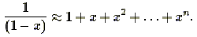
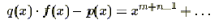

A polynomial p(x) of degree n can be used to approximate a function f(x) by setting the coeficients of p(x) to match the first n coeficients of the power series of f(x) (expanded about x = 0). For example,

Unfortunately, polynomials are "nice" and they do not work well when they are used to approximate functions that behave poorly (e.g. those with singularities). To overcome this problem, we can instead approximate functions by rational functions of the form p(x)/q(x), where p(x) and q(x) are polynomials. You have been asked by Approximate Calculation Machinery to solve this problem, so they can incorporate your solution into their approximate calculation software.
Given m, n, and the first m + n coeficients of the power series of f(x), we wish to compute two polynomials p(x) and q(x) of degrees at most m-1 and n-1, respectively, such that the power series expansion of q(x)·f(x)-p(x) has 0 as its first m+n-1 coefficients, and 1 as its coefficient corresponding to the xm+n-1 term. In other words, we want to find p(x) and q(x) such that

where ... contains terms with powers of x higher than m+n-1. From this, f(x) can be approximated by p(x)/q(x).
A polynomial p(x) of degree n can be written as p0 + p1·x + p2·x2 + ... + pn·xn, where pi's are integers in this problem.
A power series expansion of f(x) about 0 can be written as f0 + f1·x + f2·x2 + ..., where fi's are integers in this problem.
The input will consist of multiple cases. Each case will be specified on one line, in the form
m n f0 f1 ... fm+n-1
where fi is the coefficient of xi in the power series expansion of f. You may assume that 1≤m, 1≤n≤4, 2≤m+n≤10, and fi are integers such that |fi|≤5. The end of input will be indicated by a line containing m=n=0, and no coefficients for f. You may assume that there is a unique solution for the given input.
For each test case, print two lines of output. Print the polynomial p(x) on the first line, and then q(x) on the second line. The polynomial p(x) should be printed as a list of pairs (pi,i) arranged in ascending order in i, such that pi is a non-zero coefficient for the term xi. Each non-zero coefficient pi should be printed as a/b, where b > 0 and a/b is the coefficient expressed in lowest terms. In addition, if b = 1 then print only a (and omit b). If p(x) = 0, print a line containing only (0,0). Separate the pairs in the list by one space. The polynomial q(x) should be printed in the same manner. Insert a blank line between cases.
2 2 0 0 1 1 4 2 1 2 3 4 5 -2 1 1 2 3 1 4 -5 0 -2 1-2 0 0
(0,0) (1,1) (-4/33,0) (-1/11,1) (-2/33,2) (-1/33,3) (-4/33,0) (5/33,1) (2/3,0) (1/3,0) (25/6,0) (-5/6,0) (1/3,2) (-1/6,3)